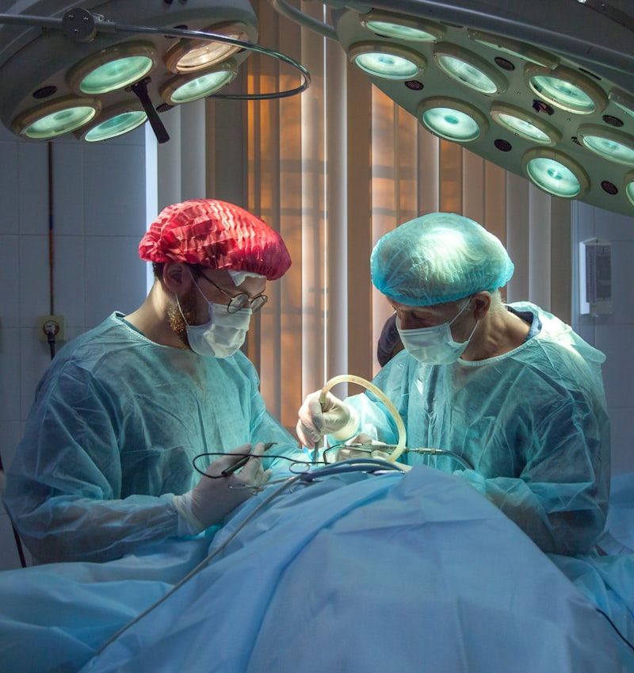

專注預防醫學，提供先進療法，守護您的健康
採用分子矯正醫學原理，精準補充高濃度維生素、礦物質、抗氧化劑與胺基酸，直接注入血液循環系統，快速提升細胞代謝功能、增強免疫力與組織修復能力。
運用低能量氦氖雷射(ILIB)照射靜脈血液，激活紅血球攜氧能力，改善微循環，降低血液黏稠度，增強細胞代謝與能量產生，適用於慢性疲勞、代謝症候群與心血管疾病輔助治療。
透過特定頻率磁場共振，調節細胞電位，促進組織修復，緩解疼痛與發炎症狀。
氫分子具有強大抗氧化能力，清除有害自由基，減輕發炎反應，保護細胞免受損傷。
透過體外反搏裝置，增加冠狀動脈血流，改善心臟功能，促進全身血液循環。
個人化健康評估與風險管理，提供全方位預防策略，遠離慢性疾病與長照需求。

伊萊診所是宜蘭地區首家由心臟血管內科權威醫師創立的預防整合醫學診所，由施奕仲院長領導，我們的使命是「健康不進頤養家」。
施奕仲院長擁有臺北醫學大學醫學士與國立臺北大學企管碩士雙重背景，是國內少數同時具備臨床醫學與企業管理專業的醫學專家。院長曾任聯安預防醫學機構心臟血管內科主任、臺北市立聯合醫院心臟血管內科主治醫師，並有美國賓州大學醫院研究經歷。
診所專注於預防醫學與整合療法，結合施奕仲院長豐富的心臟血管疾病防治經驗與現代先進預防醫學技術。我們不只治療疾病，更重視全面的健康管理，幫助患者遠離慢性病風險，避免進入長照體系。
由心臟血管內科專科醫師領導的專業團隊
融合國內外頂尖醫學機構的臨床經驗
專注疾病預防與健康促進的先進醫學
傳統醫學與現代先進療法的完美結合
施奕仲院長擁有豐富的預防醫學與內科臨床經驗
預防醫學專家 / 內科專科醫師 / 心血管疾病防治權威
施奕仲院長擁有臺北醫學大學醫學士 (MD) 與國立臺北大學企管碩士 (MBA) 雙重學歷，是國內少數同時具備臨床醫學與企業管理專業的醫學專家。院長曾任聯安預防醫學機構心臟血管內科主任、臺北市立聯合醫院心臟血管內科主治醫師、台大醫院心臟內科研究員醫師，並有美國賓州大學醫院研究經歷。在心臟血管疾病防治方面有豐富臨床經驗，被譽為心臟權威醫師。
院長堅信「預防勝於治療」，全心投入預防醫學領域。他將傳統內科專業知識結合現代先進療法，為患者提供全方位的健康管理方案，致力於實現「健康不進頤養家」的目標。
施奕仲院長專精於多種先進預防醫學療法，包括分子點滴治療、靜脈雷射(ILIB)、SIS磁場、氫氣治療、體外反搏(EECP)等，為宜蘭地區患者帶來專業的健康照護服務。
臺北醫學大學醫學士 (MD)
國立臺北大學企管碩士 (MBA)
內科專科醫師資格
曾任台北市立聯合醫院內科醫師
豐富的心臟血管疾病臨床經驗
西醫師執照
內科專科醫師資格
預防醫學專家
心臟血管疾病防治權威
「預防勝於治療，我的使命是幫助每一位患者遠離慢性疾病與長照需求，實現健康不進頤養家的理想生活。」
最新醫療知識與健康生活建議
了解如何透過均衡飲食預防慢性疾病，維持心血管健康。
早期檢測與生活習慣調整，有效降低心臟病風險。
學習壓力管理技巧，改善自律神經失調問題。
如有任何健康問題或預約需求，請隨時與我們聯絡
宜蘭縣宜蘭市中山路二段123號
(03) 123-4567
週一至週五 09:00-17:00
contact@elai-clinic.tw
客服專用信箱